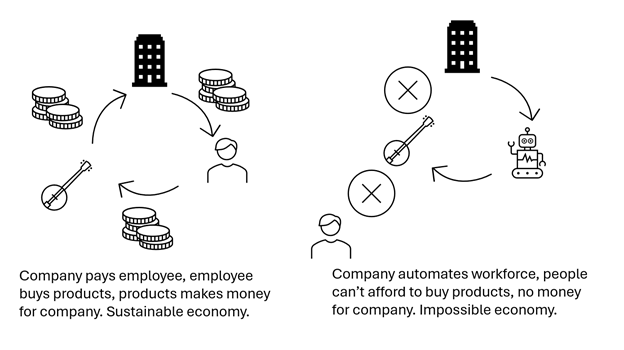
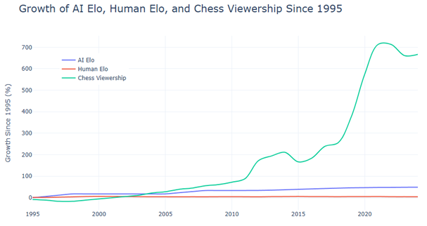
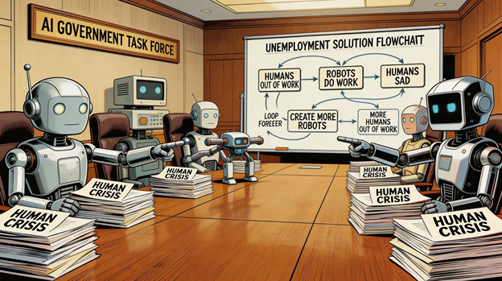

I have a master's in AI, have been a lead AI engineer in multiple startups, and have delivered large, complex AI-centred projects for FTSE 25 companies. One thing seems certain to me, almost beyond question: the AI revolution is going to have a drastic impact on the job market.
I believe this would be true even if the quality of current LLMs plateaued today, never improved, and humanity instead focused entirely on how to best use the models already available. But even if we do eventually reach AGI, I do not believe there will be any shortage of human jobs, even if most of today's jobs no longer exist. As a teaser for why I think this is the case, consider whether you would rather watch two superintelligent AIs play chess, or two grandmasters?
To properly explore this debate, an assumption has to be made. Not because it is likely, but because without it there is little point debating the future job market. The assumption is that AGI — nor anything else for that matter — will not destroy the planet, trigger a devastating world war, or send us back to the Stone Age.
AGI, among the many challenges humanity already faces, brings with it many possibilities for disaster, all of which are worth debating. But for today, I will focus on the implications of AGI for the job market in the perhaps unlikely scenario that we solve the alignment problem, the bad actor problem, and avoid starting World War III.
A slightly easier assumption to make is that we will continue to use AI, improve its capabilities, and that organisations will attempt to automate almost every job they can. This itself creates a problem: if we lived in a world where nobody had money because nobody had jobs, then companies would have no income to justify automating those jobs in the first place.
But in a world with properly aligned AI and properly aligned world leaders, I think it is reasonable to expect some form of safety net for those who genuinely cannot find work. More importantly, I think there will still be many jobs to go around, continuing the cycle of employees buying things from companies, which in turn pay employees.

Final note before I jump into the jobs debate: I do not think AGI is needed to automate most of today's jobs. LLMs do not need to get better for us to build cheap autonomous vehicles capable of replacing every taxi driver on the planet. What needs to improve is the engineering around such products, and I believe that will happen as people continue to innovate.
For this blog, the exact point at which we reach AGI is not the important thing (some people think we are already there). What matters is the point of complete human-capability automation, which may or may not arrive alongside improved AI. Hence, for the rest of this blog, I will refer to the here coined term HCAP: Human Capable Automation Point. By this I mean a point in the near future where we have solved the robotics and abstract reasoning limitations of current autonomous systems, and have technology capable of automating every task a human can currently do: from writing code to telling jokes, from building bombs to curing cancer, from driving to cooking to teaching to playing sport.
So with these perhaps optimistic assumptions established, why do I think humans will retain paid, valuable, and fulfilling employment after HCAP?
As alluded to earlier, AI has been better than humans at chess for decades, yet watching human chess has grown in popularity. Why have we not stopped watching humans and simply watched computers play? Well, because why would anyone spend their time doing that? There are no stakes.

Humans are interested in humans. That is one of the reasons we are the most successful creatures on the planet. Octopuses are intelligent, but they have not taken over the oceans yet. Why? Because intelligence alone is not our superpower. We are also among the best collaborators in the animal kingdom.
Whether you look at isolated tribes or entire nations, it is clear that humans work best with humans, and that is coded into our DNA. People will pay to watch humans play football, sing songs, and perform comedy far more readily than they will pay to watch robots.
But what if you are not a professional sportsman or pop star? Although we may still pay to attend concerts, perhaps the performer will now pay a company to automate the process of writing and editing their songs rather than paying humans. While there will likely be demand for artists who are trusted not to use AI or automation in their creative process, many of the supporting jobs in those industries will probably be automated.
For example, I think people will still care about watching Leonardo DiCaprio rather than an AI-generated actor, even if the AI is technically better at acting. I also think Leonardo's likeness will be legally protected. But I do not think people will be nearly as concerned about extras losing their jobs to AI.
And that is the crux of the debate. If you want to know which jobs will survive after HCAP, ask yourself: which jobs do I care about being done by a human?
For me, I can imagine a world where the diagnosis of medical conditions is automated, but a human is still paid to talk me through the treatment. I can imagine elevators filled with AI-generated music and streets filled with human buskers. I can imagine a world where AI creates the optimal curriculum, but humans are still paid to teach it. This is because humans want humans to give them their medicine, sing them songs, and teach their children how to be decent people.
My estimate is that perhaps only 20–30% of jobs are ones where consumers genuinely care whether a human is doing them. The remaining 70–80% are roles where people mainly care about cost, quality, and convenience. That is, for most jobs today, humans will not be needed after HCAP. This includes jobs that people often assume are safe from AI.
Take a high-voltage electrician, for example. This is a highly skilled, highly dexterous job that current AI is far from automating. But if you asked a sufficiently specialised AI how to carry out a procedure on a high-voltage cable, it would already know the steps, because those procedures are documented online. The limiting factor is robotics.
Given the potential profit in this field, I believe that gap will be overcome over the next few decades. Once it becomes possible to automate this work, it will almost certainly be cheaper and safer to do so. People not directly involved with the job would likely be indifferent, or perhaps even prefer a robot to do it for safety reasons.
After HCAP, any job where we do not care whether it is done by a human will be automated. Ask yourself: would I pay extra for this job to be done by a human rather than a robot? For example, would you pay for a Google competitor if you knew all of its code had been written by humans? My guess is that you would not pay more for a worse product. If that is true, then Google's coders are vulnerable after HCAP.
This logic extends to many jobs people assume are safer: logistics, construction, scientific research. So what does the world look like after HCAP, once 75% of the jobs that exist today no longer do?
The first thing to note is that the current global economy relies on consumers, so there is a strong incentive for governments, and even technology companies, to ensure there are at least some safety nets for those who lose their jobs during the transition. But that does not mean there will not be huge consequences for those who do lose their jobs.
Imagine you are a pilot. This is a highly skilled, highly specialised, highly paid profession that will almost certainly be automated after HCAP. What do you do once you lose your job? How many transferable skills do you have? There will almost certainly be no entry-level jobs available that pay anywhere near as well as your old role. Grappling with the fallout for the billions of people who may lose their jobs will be one of the greatest challenges governments around the world have ever faced.

But for some people, such a revolution may simply mean more time with family, better healthcare, healthier lifestyles, and perhaps even better jobs.
While demand for isolated, specialised roles may decline, demand for sociable, extroverted jobs where the customer truly values the presence of another human may thrive after HCAP. Perhaps through government support, perhaps naturally, many roles of this kind will be created and expanded as a necessary way of preventing an economy that has automated away so many jobs from collapsing.
So if you are wondering which skills will matter most for your children as we sit in the calm before the HCAP storm, my answer is this: being a good person whom others want to be around, learn from, and interact with is not a skill that will be automated away, even by robots with near-perfect human likeness.
So although HCAP may not be easy for many people, perhaps there is something reassuring in the idea that the most valuable skill in the post-HCAP era may simply be being a decent person — and that is something we can all start working on today.